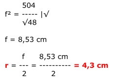

Aufgabe 108 Wie groß ist der Umkreisradius des Drachens, wenn e die Diagonale f im Verhältnis 4 : 3 teilt?

BC = f entspricht 7 Teilen 3 DC entspricht --- von f 7 4 BD entspricht --- von f 7 Höhensatz im Dreieck ABC: e 3 4 (---)2 = --- f * --- f 2 7 7 e2 12 ---- = ---- f2 |*4 4 49 48 e2 = ---- f2 |√ 49 f e = --- * √48 7 e * f A = ------- 2 e eingesetzt: f * √48 * f A = -------------- 2 * 14 f2 * √48 36 = ----------- | *28 28 f2 * √48 = 504 | :√48 504 f2 = ----- |√ √48 f = 8,53 cm f 8,53 cm r = --- = --------- = 4,3 cm 2 2